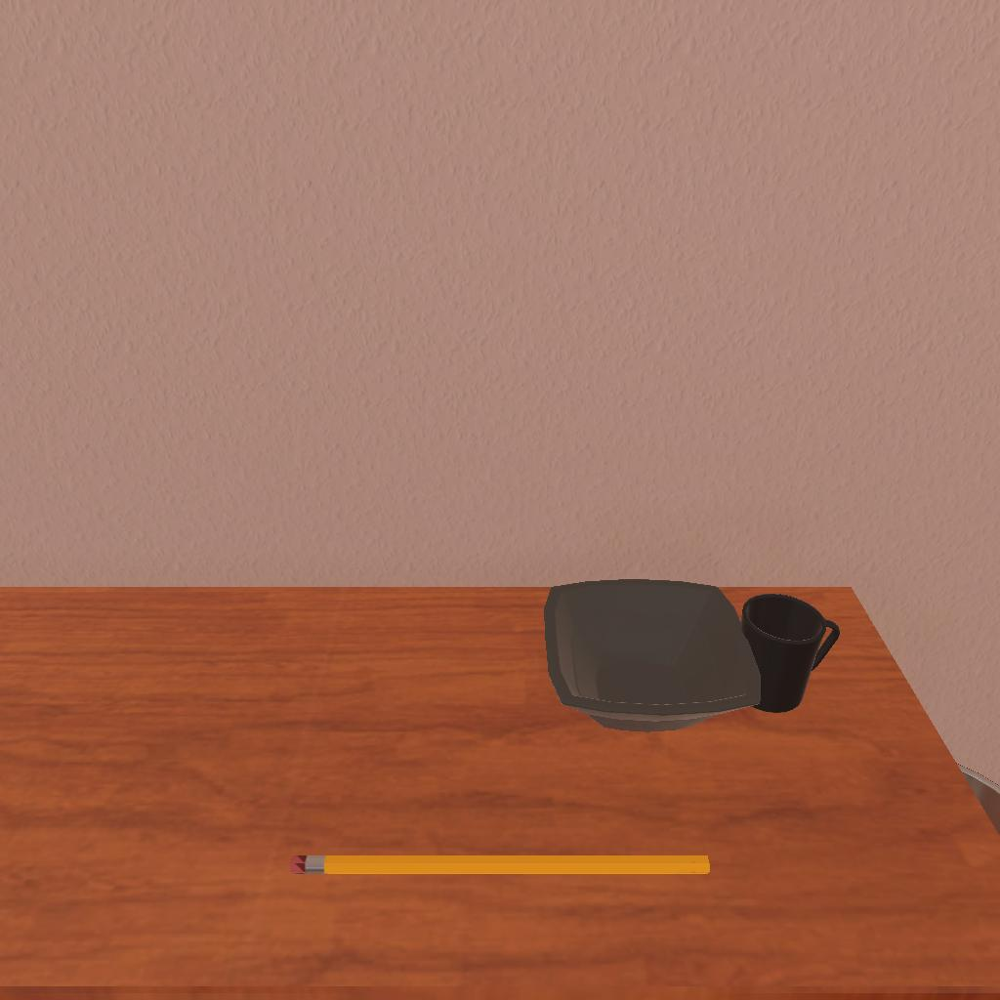

---------------------------------------------------------task: 2---------------------------------------------------------
--------------------------------------------------------------------------------------------------------------------------------------------------------------------
--------------------------------------------------------------------------------------------------------------------------------------------------------------------
Step:--------------------------------------------------------------------------11-------------------------------------------------------------------------------
----------------------------------------
VLM Prompt:
**Task**
Please perform as an embodied AI agent. Our final objective is to look at pen under the desklamp. Below is the plan for completing the task, the current observation, alongside historical data and admissible actions for the next step. Please determine the best action for the next step!
**Plan**
Below is a detailed step-by-step plan to complete the task.
1. Find a pen.
2. Pick up the pen.
3. Locate a desklamp.
4. Turn on the desklamp.
5. Position the pen under the light of the desklamp.
6. Look at the pen under the desklamp.
**Current Observation**
Displayed is an image capturing the current position of the agent.
**History Information**
Displayed are the previous observations with their corresponding actions.
State 1:
1. Step Index in the Plan: 1
2. Objects: (none specified)
3. Action: go to desk 1
State 2:
1. Step Index in the Plan: 1
2. Objects: Pencil, Desk
3. Action: go to drawer 3
State 3:
1. Step Index in the Plan: 1
2. Objects: Pen, Desklamp
3. Action: open drawer 3
State 4:
1. Step Index in the Plan: Post-observation of pen and desklamp, pre-interaction
2. Objects: Pen, Desklamp, Desk, Drawer 3 (opened)
3. Action: open drawer 3
State 7:
1. Step Index in the Plan: Unknown (current task is to pick up the pen)
2. Objects: Pen, Desklamp, Desk, Drawer 3 (open)
3. Action: (20): close drawer 3
State 9:
1. Step Index in the Plan: Not specified but contextually it is the step to pick up the pen.
2. Objects: Pen, Desklamp, Desk.
3. Action: go to desk 1.
State 10:
1. Step Index in the Plan: 9
2. Objects: Pen, Desklamp, Desk
3. Action: take pencil 1 from desk 1
State 11:
1. Step Index in the Plan: Not specified
2. Objects: Pen, Desklamp, Desk
3. Action: examine pencil 1
**Admissible Actions**
(1): go to bed 1
(2): go to dresser 1
(3): go to bed 2
(4): go to drawer 1
(5): go to sidetable 1
(6): go to drawer 2
(7): go to sidetable 2
(8): go to drawer 3
(9): go to drawer 4
(10): go to garbagecan 1
(11): go to drawer 5
(12): go to drawer 6
(13): go to drawer 7
(14): go to drawer 8
(15): go to drawer 9
(16): go to drawer 10
(17): go to drawer 11
(18): go to safe 1
(19): put pencil 1 in/on desk 1
**Analysis Guideline**
1. Analyze the history and current observation, and then determine our current step in the plan and our current place.
2. List all visible objects related to the task in the current observation, without summarizing any as "various items."
3. Analyze the objects in the current observation based on the history and the requirements for the current step, and then determine if we can complete the step with the current observation.
4. Analyze and decide on the most appropriate action to take.
5. Summarize the analysis using the following format: "Analysis: [The summarization of the analysis], The Most Appropriate Action: (i which is the integer.): [Selected action]"
**Notes**
1. We must complete each step of the plan in order and cannot skip steps when the previous ones are not finished.
2. For "Go to" actions listed as "go to xxx [n]", interpret this as there are n distinct actions available: "go to xxx 1", "go to xxx 2", ..., "go to xxx n". Select one specific action from these options instead of using "go to xxx [n]".
3. If receptacles such as drawers, cabinets, and so forth are closed in the current observation, we may try to open them.
4. Pay attention to synonyms and ensure clarity in the terms used.
5. We must determine and provide the single action which must be in the **Admissible Actions**.
6. If there is no history available, we are at the first step and the current place is "Unknown".
**Answer**
Please select the most suitable action by following the **Analysis Guideline**, keeping the above **Notes** in mind.
----------------------------------------
----------------------------------------
VLM Response:
Analysis: The current step in the plan is to position the pen under the light of the desklamp. The current observation shows that we have a pen on the desk, but the desklamp is not visible in the current observation. From the history information, we know that the desklamp is present in the environment. Since the desklamp is not in the current observation, we cannot complete the step with the current observation. Therefore, we must locate the desklamp. None of the admissible actions directly indicate an action towards a desklamp. However, based on the common placement of desk lamps, it is reasonable to assume that the desklamp could be located on a sidetable or a dresser near the desk.
The Most Appropriate Action: (5): go to sidetable 1
----------------------------------------
----------------------------------------
>>> Refine VLM Response and Get Pure Action: go to sidetable 1
----------------------------------------
-----------------------------------------------------------------
Running time: 6.584054231643677 seconds
Total Money: 0
-----------------------------------------------------------------
-----------------------------------------------------------------
Summarization Prompt:
**Context**
Analysis: Since there is no history information, we are at the first step in the plan, which is to find a statue. The current place is unknown. In the current observation, we see a floorlamp next to an armchair with a small table that has a small object on it, which could potentially be the statue we are looking for. Since the plan requires us to find a statue first and it appears there might be one on the table next to the armchair, we should investigate this object to determine if it is the statue we need.
The Most Appropriate Action: (1): go to armchair 1
**Summary**
1. Step Index in the Plan: 1
2. Objects: Floorlamp, Armchair, Small Table, Small Object (potential statue)
3. Action: go to armchair 1
**Context**
Analysis: The current step in the plan is to position the pen under the light of the desklamp. The current observation shows that we have a pen on the desk, but the desklamp is not visible in the current observation. From the history information, we know that the desklamp is present in the environment. Since the desklamp is not in the current observation, we cannot complete the step with the current observation. Therefore, we must locate the desklamp. None of the admissible actions directly indicate an action towards a desklamp. However, based on the common placement of desk lamps, it is reasonable to assume that the desklamp could be located on a sidetable or a dresser near the desk.
The Most Appropriate Action: (5): go to sidetable 1
Please summarize the context by following above examples when providing the summary, and ensure that only the summary is included, without any extra explanation.
**Summary**
-----------------------------------------------------------------
-----------------------------------------------------------------
Summarization Response:
1. Step Index in the Plan: Unknown
2. Objects: Pen, Desk, Desklamp (not visible)
3. Action: go to sidetable 1
-----------------------------------------------------------------
-----------------------------------------------------------------
Text Observation:You arrive at loc 4. On the sidetable 1, you see a alarmclock 1.
-----------------------------------------------------------------
UNSUCCEED